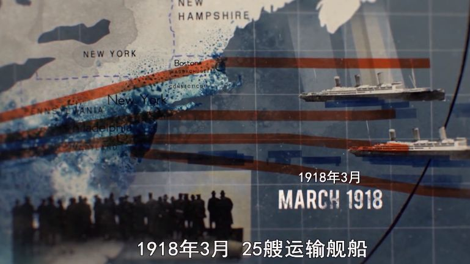

“完全的混乱！”日本专家登上邮轮直呼“恐惧”
原文链接 备份链接 澎湃新闻记者 刘栋 岩田健太郎 “你好，我是日本神户大学医院的传染病医学专家岩田健太郎教授，今天我进入了‘钻石公主’号邮轮，这艘船现在正遭受新冠病毒的大面积感染。我在船上没有待满一天就被赶下了船，我将告诉你们我在船上看 …
欧亚大陆的病菌杀死的印第安人和其他非欧亚大陆民族，比欧亚大陆的枪炮或钢铁武器所杀死的要多得多。——《枪炮、病菌与钢铁》[1]
1918年3月，25艘满载士兵的军舰从美国出发，驶向大西洋另一端的欧洲。
此时的欧洲大陆，已在第一次世界大战的泥潭里深陷近4年。远渡而来的美国援军，对于英法等协约国而言，显然如雪中送炭。
无人知晓，这批援军身上，携带着比战争更危险的杀器——流感病毒。
这种刚刚传播到人类身上的病毒，最初来自美国堪萨斯州一个偏远农场的家畜或家禽。被感染的农场工人应征入伍，将它带到了美国第二大新兵训练营。

当时，这种病的症状并不严重，新兵们照常被送往欧洲战场。他们的登陆地点是法国布雷斯特港，效果也立竿见影：美军到来第二天，法国海军司令部因流感中断指挥。
在前线拥挤的战壕中，不知名的病毒大肆扩散。和炮弹不同，病毒的攻击不分国界。一度在战场上取得优势的德军，因为流感造成的减员，不得不数次推迟总攻；从6月到8月，200万在法国的英军士兵中，有120万人被传染。
但直到此时，绝大多数人的病症依然轻微，士兵们把它叫做“三日热”，《柳叶刀》上的论文称，这种发热疾病可能连流感都算不上。有一段时期，病毒甚至短暂地消失了。
人们放松了警惕，病毒却在迅速变异、传播。
那是属于海运的时代。没有民航飞机，水运是远距离大批量运输的最优解决方案。船舶将旅客和货物带到世界各地，同时带来的，还有病毒。
长距离的航行、相对封闭的空间和较差的卫生条件，让病毒有充分机会传播并爆发。许多船只在航行途中，就已经成了名副其实的“瘟疫船”。
6月，货船“埃克塞特城市”号从英国驶往美国。到达费城码头时，大量奄奄一息的船员被直接送到医院，而后接二连三地死亡。
8月，英国皇家海军军舰“曼图亚”号抵达塞拉利昂补充燃料，200名患流感的船员将疫病传给了当地人。同月，另一艘海军运输舰“切普斯托城堡”号同样在这里停留，三周后，船上1150人中，死亡率达到了骇人的38%[2]。
商船和运输船还迅速将病毒带向了远东。印度、中国都出现了大量感染病例。后来，印度成为全世界疫情最惨烈的地区之一。
9月，病毒正式卷土重来。这一次，它变异成了致命的瘟疫。一艘艘“瘟疫船”，不仅仅是海上移动的传染源，也是活生生的人间地狱。
9月29日，美国再次派出一批军舰，从新泽西出发奔赴欧洲。这批军舰普遍超载50%，挤满了士兵。其中一艘名为“大海兽”号的军舰，载着9000名士兵，以及致命的病毒。

“大海兽”号上数百人都没能活着抵达目的地，还有很多士兵在登陆后24小时内死亡。从船舱到医院途中，他们又感染了更多的人。
这场发源于美国、扩散于英法的瘟疫，后来被冠以“西班牙流感”的名号。这是因为西班牙不是一战参战国，没有战时新闻管制，所以对流感疫情的报道较为及时充分，结果反而让人误以为它是疫病的发源地[3]。
1918年到1919年，“西班牙流感”横扫世界，根据最保守的估计，它造成的全球死亡人数至少为2000万人。而据诺奖得主伯内特估计，死亡人数可达5000万至1亿人[4]。
相比之下，持续了4年多的第一次世界大战阵亡人数是1000万人左右。
病毒比枪炮更加致命。
在“西班牙流感”爆发前，人类对“瘟疫船”并非毫无警惕和防范。
数百年前，另一场惨烈的瘟疫——黑死病席卷欧洲后，心有余悸的人们初次意识到了远渡而来的船只可能携带的危险。
一个冷知识：英语中的“隔离检疫”（Quarantine），语源来自意大利语Quarantina Giorni，本意是“四十天”。
1377年，当时最繁荣的海港城市之一拉古萨（现为克罗地亚杜布罗夫尼克），为了防止船上的人将疫病传到当地，出台规定：前来靠岸的船只，必须在海上停留30天，身体无恙者才能上岸。
这种做法随后被各大海港城市沿袭。1448年，威尼斯议院进一步决定，将这个隔离期延长到40天。“40天”于是成为了“隔离期”的代名词[5]。
当时的实践和后世研究证明，对船只施行40天隔离期是行之有效的手段。因为黑死病从感染到死亡的周期据推测是38天，而通过对从1347年到1760年超过6000场瘟疫的数据分析，重要的航运路线与瘟疫传播的路线几乎总是重合[6]。
但隔离只能防范天灾，无法抵抗人祸。1720年，一艘名为“伟大的圣安东尼”号的商船抵达法国马赛，按照规定在港口隔离。不巧这艘船的船主正是马赛副市长，他利用职权之便，要求“通融”，提前卸货。
船舱中的虱子随着货物落地，它们携带着腺鼠疫病菌，迅速遍布整个城市。官员的一次渎职徇私，最终酿成了持续了长达两年的瘟疫，约10万人死亡[7]。

油画中的马赛瘟疫
对于已然感染瘟疫的船只而言，隔离虽然可以避免将瘟疫传播到陆地，却无法阻止它在船上肆虐。
1852年8月，一艘名为“提康德罗加”号的客船从利物浦出发，前往墨尔本。船舱中，大多是因为饥荒和贫困前往新大陆谋生的苏格兰人和英格兰人。
出发不到一周，疾病开始爆发。超载、糟糕的通风条件和越来越恶劣的卫生条件加剧了瘟疫蔓延。船上的药品很快用尽，越来越多的人死去。
地狱般的航程持续了90天。抵达墨尔本后，他们停留在隔离区，开始得到物资和医疗人员的补充，但仍有82人在六周内陆续死亡。最后，814名乘客中，168人死于这场瘟疫[8]。
人们也在不断从“瘟疫船”的悲惨历史中吸取教训。黑死病让人类认识到了隔离和检疫的重要性，从此将其固定为一种制度；1850年开始的第三次鼠疫大流行，让人们开始学会用硫磺熏舱灭鼠[9]；而“西班牙流感”后，欧美国家纷纷开始建立国家级的公共卫生系统。
但直到今天，如何对待“瘟疫船”，依然是一个难以解决的伦理困境。船上乘客的生命安全与陆地上更多人的生命安全之间，在现有的科技条件下，终归难以两全。
在民用航空日益普及后，航运不再是最主流的长途客运手段。如今的大型载客船只，其目的不再是运输，而是休闲、旅游。
今天的远航邮轮上，卫生和居住条件已经有了长足进步，但它毕竟仍是一个准封闭、甚至十分拥挤的人类聚集空间，船上聚集着来自各地的乘客，每个人都有可能是潜在的病原。
这并非危言耸听。仅仅从去年算起，数条豪华邮轮线路都曾发生过病毒传播事件。
2019年1月，世界上最大的邮轮之一“海洋绿洲”号从佛罗里达出发前往牙买加，但仅仅一天之后就掉头返航，因为船上277人感染了诺如病毒。
5月，美国“山达基教”的一艘豪华邮轮发生麻疹疫情，318人被隔离在海上。
今年，当全世界都在关注“钻石公主”号上的新冠肺炎疫情时，其他邮轮也在遭遇瘟疫潮。
2月5日开始，“威士特丹”号因疑似载有新冠肺炎患者，被迫在海上漂泊了近两周；2月10日，“加勒比公主”号因至少299名乘客和22名船员感染诺如病毒而返回佛罗里达；11日，英国“发现精神”号也因诺如病毒爆发而在直布罗陀遭遇遣返。
一切都在提醒我们，“瘟疫船”的阴影从未彻底消失。它就像任何一种致命的病原体一样，一旦遇到合适的温床，就会卷土重来，重新成为人类的噩梦。
参考资料：
[1] 贾雷德·戴蒙德：《枪炮、病菌和钢铁：人类社会的命运》，上海译文出版社2000年，谢延光译
[2] 约翰·巴里：《大流感：一场致命瘟疫的史诗》，上海科技出版社2008年，钟扬等译
[3] 魏倩：《西班牙流感100周年：人们遭遇过什么，又改变过什么？》，好奇心日报2018年3月6日
[4] 韩福东：《1918-1919，被一场流感击中的中国》，《经济观察报》2019年5月13日
[5] 周周：《从夺走2500万欧洲人性命的黑死病看“隔离防疫”的由来》，《欧洲时报》2020年2月13日
[6] R. Yue, H. Lee, C. Wu, “Trade routes and plague transmission in pre-industrial Europe”, Sci Rep 7, 12973 (2017)
[7] E. Andrews, “6 Devastating Plagues”, History.com
[8] B. J. Starmans, “Ticonderoga”, The Social Historian
[9] O. Sonne, “Plague, Rats, and Ships: the realisation of the infection routes of plague”, Dan Medicinhist Arbog, 44 (2016)
*本文头图及内文图片来自视频截图
原文链接 备份链接 澎湃新闻记者 刘栋 岩田健太郎 “你好，我是日本神户大学医院的传染病医学专家岩田健太郎教授，今天我进入了‘钻石公主’号邮轮，这艘船现在正遭受新冠病毒的大面积感染。我在船上没有待满一天就被赶下了船，我将告诉你们我在船上看 …
原文链接 备份链接 图片来源：WikiCommons 记者：田思奇 “ “当我们回顾过去时，很容易对当时某一时刻的公共卫生决策做出评判。当时的决定，显然比让所有人分散在世界各地要好得多。研究这一特殊事件，看看过程中出了什么问题，这非常重 …
原文链接 备份链接 澎湃新闻记者 张无为 亚伯在“钻石公主”号上拍下的富士山 本文图片均来自大卫·亚伯社交媒体 2月19日，在经历了14天的海上隔离后，备受关注的“钻石公主”号邮轮首批新冠病毒检测呈阴性且未与确诊病例同舱室的443名乘客终 …
原文链接 备份链接 钻石公主号邮轮在全球新冠疫情中是一个特殊又典型的样本：由于邮轮的封闭环境，它成为了传染集中暴发地，证明了全人类的普遍易感性；这又是一艘停靠在日本、船籍是英国、运营主体属于美国的邮轮， …
原文链接 备份链接 澎湃新闻记者 刘栋 实习生 刘宇锟 岩田健太郎 在24小时内获得过百万次的点击后，日本传染病专家岩田健太郎在20日清晨删除了他在社交媒体上发布的视频。 “我认为由于没有必要进一步讨论，因此我删除了视频。对于受到影响的 …